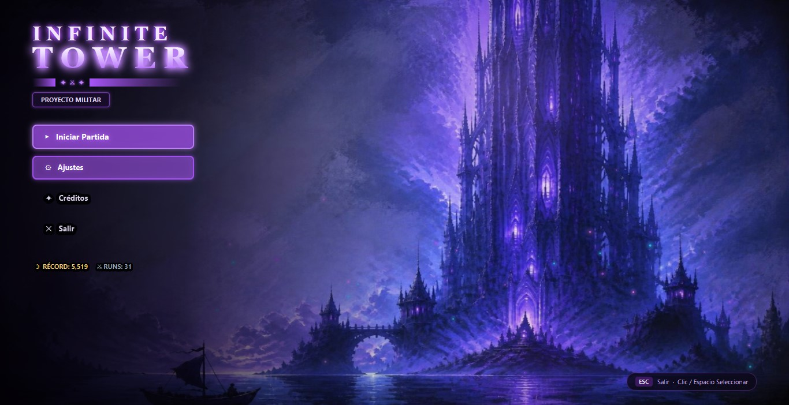
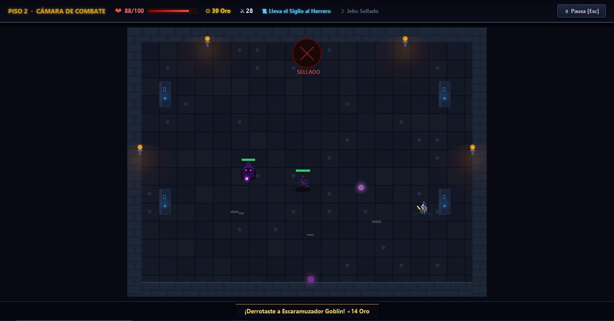

UN ROGUELIKE DE PROYECTO MILITAR
Cada ascenso
es distinto.
Combate, explora y descubre qué te espera en el siguiente piso de Infinite Tower.
Descargar para WindowsInstalador de Windows · 181 MB
UN JUGADORROGUELIKE
PISOS PROCEDURALESHISTORIA DINÁMICA
NUNCA SABES QUÉ HAY ARRIBA
La torre cambia.
Tu estrategia también.
Cada piso es una habitación nueva y cada partida abre un camino distinto. Prepárate para lo que venga.
- 01 Combate y encuentros inesperados
- 02 Acertijos, eventos y tiendas
- 03 Personajes con historias propias

LA TORRE TOMA NOTA
No hay un piso final.
Hay un final que desbloquear.
Tus misiones y decisiones determinan qué jefe final puede aparecer. Cuando lo desbloquees, no sabrás en qué piso te estará esperando.
Entra a la torreEL SIGUIENTE PISO TE ESPERA
¿Vas a subir?
Descarga Infinite Tower para Windows y empieza tu partida.
Descargar el juegoInstalador de Windows · 181 MB